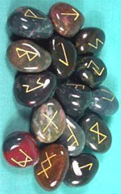
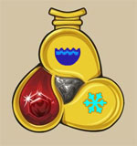
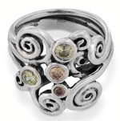

I chierici delle Forze della Natura possono consacrare determinati oggetti al fine di conferire loro un incantamento sacro minore.

| OGGETTO | Pergamena delle Forze della Natura |
| ORIGINE | DIVINA - Divinità Forze della Natura - Divinità Neutrali |
| POTENZA | Least Minor Enchantment (75 xp, 150 gp) |
| SCUOLA DI MAGIA | ENCHANTMENT |
|
DESCRIZIONE
|
Può
essere incantata con questo incantamento minore ogni pergamena non magica.
Attraverso l'utilizzo di questo incantamento
la pergamena diventerà
capace di contenere unicamente incantesimi clericali della divinità del
sacerdote che ha incantato l'oggetto, divenendo il supporto
necessario per la creazione delle pergamene magiche clericali.
Oltre ai comuni modificatori applicabili a tutti gli incantamenti
minori, chi possiede la competenza Papermaking e la utilizza
nella produzione di questo minor enchantment riceve i seguenti
modificatori nella produzione di questo oggetto: |
| OGGETTO | Crystals of Elemental Fury |
| ORIGINE | DIVINA - Divinità Forze della Natura - Divinità Neutrali |
| POTENZA | Least Minor Enchantment (75 xp, 350 gp) |
| SCUOLA DI MAGIA | EVOCATION |
|
DESCRIZIONE  |
Con un rituale sacro il chierico delle Forze della Natura può incantare grossi cristalli di roccia con inciso simboli runici legati all'elemento di collegamento. Ognuno di questi cristalli ha un peso di 0,5 libbre ed un valore minimo pari a 25 monete d'oro. Al momento dell'incantamento di ogni singolo cristallo (è richiesto un autonomo procedimento per ognuno di essi) il chierico deve selezionare l'elemento al quale legare il cristallo di roccia. In particolare, costui potrà scegliere uno tra i seguenti elementi: fuoco, freddo od elettricità. Orbene, una volta incantato, questo oggetto magico può essere attivato con un'azione complessa avente fattore iniziativa pari a quello di una comune azione fisica che non richiede il mantenimento della concentrazione ma l'invocazione orale (componente vocale) del nome esatto della relativa Forza della Natura, rispettivamente Agràt (fuoco), Ash (acqua) e Nar (aria). All'atto di attivazione il cristallo di roccia deve essere posato o lanciato (secondo le regole del lancio degli oggetti [link]) su una qualsiasi superficie solida. In tale luogo il cristallo esploderà distruggendosi e scatenando la furia dell'elemento legato al cristallo. In pratica, nella posizione (esagono) di attivazione del cristallo saranno prodotti 1d6+2 danni dell'elemento selezionato (considerabili danni di natura magica); inoltre, in tutte le posizioni (esagoni) adiacenti a quella dell'esplosione saranno prodotti 3 danni del medesimo elemento. |
| OGGETTO | Amulet of Protection from Elements | |||||||||||||||||||||||||
| ORIGINE | DIVINA - Divinità Forze della Natura - Divinità Neutrali | |||||||||||||||||||||||||
| POTENZA | Variabile | |||||||||||||||||||||||||
| SCUOLA DI MAGIA | ABJURATION | |||||||||||||||||||||||||
|
DESCRIZIONE
 |
Questo amuleto magico
(cfr. le regole
generali per gli amuleti magici al seguente
link)
è in grado di proteggere chi lo indossa dalla
furia degli elementi. L'amuleto dovrà essere costruito interamente in
oro e dovrà essere inciso con rappresentazioni degli elementi, avendo un
peso pari a 0,2 libbre ed un valore minimo pari a 100 monete d'oro.
Quando l'amuleto viene incantato sarà necessario scegliere il tipo di
danno dal quale l'amuleto dovrà proteggere. In particolare, potrà essere
selezionata una tra le tre seguenti protezioni:
fuoco e calore,
freddo od
elettricità.
|
| OGGETTO | Ring of Wind Screen |
| ORIGINE | DIVINA - Divinità Forze della Natura - Divinità Neutrali |
| POTENZA | Superior Minor Enchantment (250 xp, 2500 gp) |
| SCUOLA DI MAGIA | CONJURATION |
| CARICHE | 10 |
|
DESCRIZIONE
 |
Con questo incantamento minore può essere incantata unicamente una anello d'argento raffigurante raffiche ventose, eventualmente impreziosito con gemme sacre alle Forze della Natura, dal valore minimo pari a 100 monete d'oro. Chi indossa questo oggetto magico minore potrà attivato validamente utilizzando una carica magica dello stesso. L'attivazione si considera un'azione complessa, avente fattore iniziativa pari a +3, che richiede componenti verbali (una preghiera alle Forze della Natura) e somatici ma non il mantenimento della concentrazione. Una volta attivato l'anello farà circondare la creatura che lo indossa da una cortina di vento che la seguirà per un intero turno (a meno che non sia dissolta magicamente prima di questo periodo). Questa cortina di vento proteggerà la creatura da tutti gli effetti di gas, fumi, spore, pulviscoli od altri effetti volatili siano presenti nell'area che non riusciranno a raggiungerla. Si noti, però, che mentre questa difesa funziona perfettamente contro elementi gassosi statici (si pensi agli effetti dell'incantesimo degli utenti di magia Stinking Cloud), qualora i gas, i vapori o gli altri effetti volatili siano concentrati e lanciati con una certa pressione contro la creatura (si pensi al soffio gassoso di un Drago Verde oppure all'incantesimo degli utenti di magia Jet of Steam) la cortina non riuscirà a fermarli ma la creatura riceverà un bonus di +10% all'eventuale tiro salvezza per evitare gli effetti del contatto con gli stessi. Infine, la cortina di vento può deviare leggermente la traiettoria dei proiettili delle armi da tiro. Per tale motivo tutti coloro che attaccheranno chi indossa l'anello durante la sua attivazione utilizzando armi da fuoco o da tiro riceveranno una penalità di -1 al tiro per colpire. Proiettili di grosse dimensioni (colpi di catapulta, balista, massi lanciati dai giganti) e proiettili lanciati utilizzando propulsione magica (come quelli effetto dell'uso di incantesimi) non saranno in alcun modo deviati dalla cortina di vento. Se, per qualsiasi motivo, chi ha attivato il potere smette di indossare l'anello l'effetto magico terminerà immediatamente. Per ricaricare l'anello è necessario posizionarlo su un altare attivo delle Forze della Natura presso un qualsiasi tempio e cospargerlo dei necessari ingredienti magici (polvere d'argento e di ossa di volatile). L'anello dovrà restare sull'altare per 30 giorni ininterrotti e sullo stesso andranno versate 25 monete d'oro di ingredienti magici per ogni carica che si vuole recuperare. Il procedimento di ricarica è sicuro ma se, per qualsiasi motivo, l'anello è rimosso dall'altare prima dello scadere dei 30 giorni il procedimento andrà interamente ripetuto e gli ingredienti dovranno essere riacquistati. A differenza dei comuni oggetti magici a cariche questo anello può esaurire tutte le sue cariche senza perdere permanentemente il suo potere magico. |
| OGGETTO | Holy Jug of Thermal Water |
| ORIGINE | DIVINA - Divinità Forze della Natura - Divinità Neutrali |
| POTENZA | Greater Minor Enchantment (375 xp, 4000 gp) |
| SCUOLA DI MAGIA | CONJURATION |
|
DESCRIZIONE
|
Con un
rituale sacro il
chierico delle Forze della Natura può incantare
una
Sacra Brocca dell'Acqua Termale. Si
tratta di una brocca sacra utilizzata per contenere l'acqua più pura
nonché come componente
materiale per l'incantesimo Thermal Spring Water (III Livello di
potere speciale delle Forze della Natura). La brocca, di metallo dolce
scolpito e dal colore verde acqua,
ha un peso pari a 2 libbre e deve avere un valore minimo pari a 125
monete d'oro. Spesso tali brocche sono abbellite con le gemme sacre alle
Forze della Natura. Orbene, una volta incantata con questo incantamento
minore, qualsiasi fedele delle Forze della Natura può attivare la brocca
dopo aver utilizzato, versandola al suo interno, una manciata di
sali minerali da infusione dal costo di 10 monete d'oro e dal peso di
0,2 libbre (che si consumano quando la brocca è attivata).
L'attivazione è un'azione complessa che richiede un intero round e
necessita di componenti verbali (parola magica di attivazione) e
somatici ma non il mantenimento della concentrazione. Quando un fedele
delle Forze della Natura attiva l'incantamento nella brocca comincerà ad
apparire acqua termale sacra dal profumo sulfureo e dalla temperatura
tiepida con la quale costui potrà bagnare le ferite di una
qualsiasi creatura (anche se non fedele della divinità). La fuoriuscita
di acqua durerà per un intero turno durante il quale, perché si
verifichi l'effetto curativo, è necessario il costante versamento
dell'acqua sulle ferite della creatura. Le creature dotate di un corpo
organico di tipo animale, infatti, recupereranno alla fine del turno
fino ad un ammontare di punti ferita persi pari al 10% (per eccesso) dei
loro punti ferita massimi. Se versata per l'intero turno su una creatura
in stato comatoso la stessa si considererà sotto effetto di una cura
magica uscendo dal coma ad un punto ferita (nessun altro effetto sarà in
questo caso prodotto). Quest'acqua non provocherà alcun effetto su
creature aventi un corpo diverso da quello specificato (si pensi ai
costruiti ed ai non morti). In luogo di curare i punti ferita persi, il
chierico può direzionare il potere guarente di quest'acqua su una ferita
critica subita dalla creatura (in questo caso non saranno curati
direttamente i punti ferita della creatura). Orbene alla fine del lancio
della magia vi sarà una certa percentuale che l'acqua sacra sia riuscita
a curare la ferita critica come indicato nel seguente schema: |